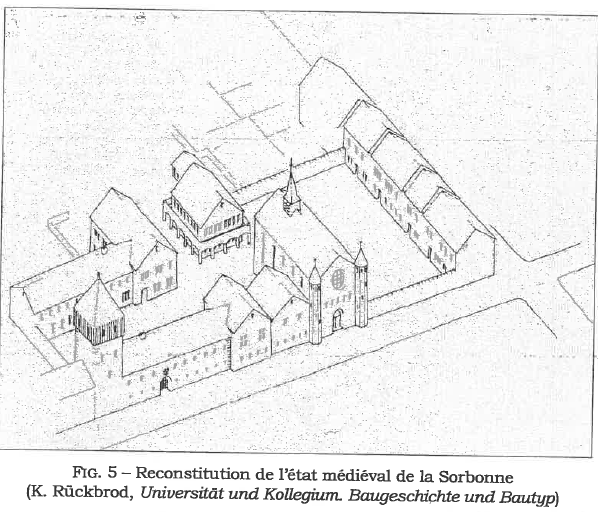
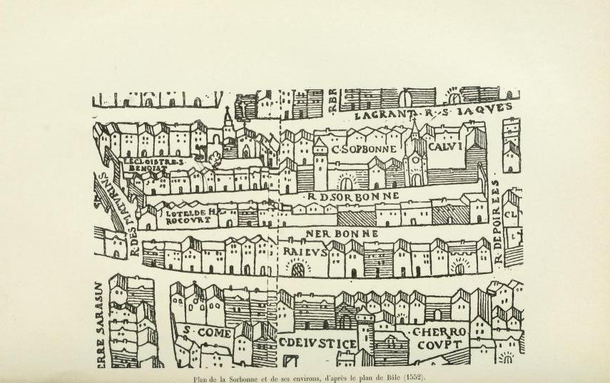
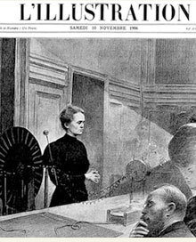

À sa création, la Sorbonne était l’un des collèges du Moyen Âge ...de l’université de Paris dont le fondateur
s’appelait Robert de Sorbon et était le confesseur du roi Louis Philippe.


La Sorbonne tire son origine du ...collège créé en 1253 par Robert de Sorbon, chapelain et confesseur du roi saint Louis qui en confirma la fondation en 1257. Nous pouvons donc récupérer les plans à partir de 1253.  

En 1635, le cardinal de Richelieu, alors proviseur du collège de Sorbonne, commande à l’architecte Jacques Lemercier un nouvel édifice aux exigences et au goût de l’époque dont il ne reste aujourd’hui que la Chapelle ...de l’université de Paris dont le fondateur s’appelait Robert de Sorbon et était le confesseur du roi Louis Philippe.

C’est dans le chœur que ...se trouve le tombeau du fameux Armand Jean du Plessis, Cardinal-duc de Richelieu (1585-1642). A la mort du cardinal, la duchesse d’Aiguillon, sa nièce et héritière, prit en charge ses dernières volontés. Elle commanda un tombeau monumental à Girardon, qui ne fut achevé qu’en 1694, le corps de Richelieu étant déposé dans une crypte sous le cénotaphe.
À partir de 1806,... Napoléon réorganisa l’ensemble du système d’enseignement supérieur français, baptisé Université impériale, et créa à Paris cinq facultés dont le but était de former les enseignants des établissements secondaires et des séminaires : les facultés des sciences, des lettres, de théologie, de droit et de médecine. La Sorbonne devint alors le siège des trois premières, ainsi que du rectorat de l’Académie de Paris auquel était attachée la fonction, spécifique à Paris, de Grand Maître de l’Université. Au départ, ces trois facultés s’installèrent au collège du Plessis. Ce n’est qu’en 1821 qu’elles rejoignirent l’ancienne Sorbonne abandonnée trente ans plus tôt.

La reconstruction des bâtiments ...du XVIIe siècle, trop exigus et incommodes, fut finalement réalisée sous l’impulsion de Jules Ferry, ministre de l’Instruction publique. Le chantier fut confié à l’architecte Henri-Paul Nénot et la première pierre du nouvel édifice fut posée en 1885. Outre la construction d’un Palais académique où siégeait l’administration rectorale, les anciens bâtiments du XVIIe siècle laissèrent place à la Cour d’honneur, la Chapelle en restant le seul élément conservé. On construisit également une vaste bibliothèque de 300 places qui comptait plus de 600 000 volumes en 1913.
Le 5 novembre 1906 ..., la leçon de la physicienne française d'origine polonaise, Marie Curie, née Maria Sklodowska, est l'événement. Journalistes, femmes du monde et professeurs prennent place à côté des étudiants pour assister à ce premier cours. Elle débute en expliquant la radioactivité et les travaux de Becquerel. Des thèmes sur lesquels elle a beaucoup travaillé avec mari. 
Les événements de mai ...1968 ne commencèrent pas en Sorbonne, mais dans l’une des nouvelles facultés qui venaient d’être construites précisément pour faire face au boom des études supérieures : la faculté de Nanterre. Lorsque la contestation gagna le Quartier latin, la Sorbonne fut occupée à son tour plusieurs fois au cours du mois de mai et devint rapidement un symbole international de la contestation étudiante, jusqu’à son évacuation définitive entre les 14 et 16 juin. Le processus de réforme qui se mit en place au lendemain du mouvement entraîna l’éclatement de l’Université de Paris en neuf – puis plus tard treize – universités. Sous l’impulsion du ministre de l’Education nationale, Edgar Faure, la loi d’orientation de l’enseignement supérieur du 12 novembre 1968 accordait aux nouvelles universités une autonomie limitée : les nouveaux établissements seraient désormais dirigés par un président, professeur élu par un conseil d’administration.
La Sorbonne est ...un bâtiment du Quartier latin dans le 5e arrondissement, c'est une propriété de la ville de Paris.